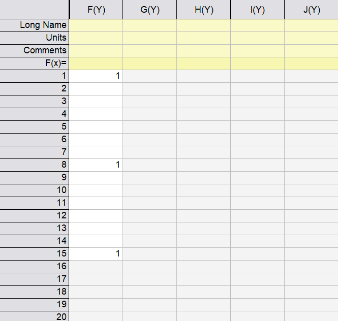
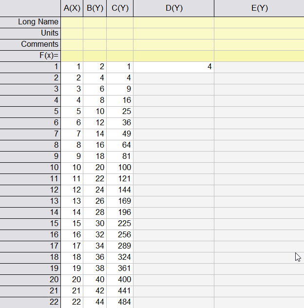
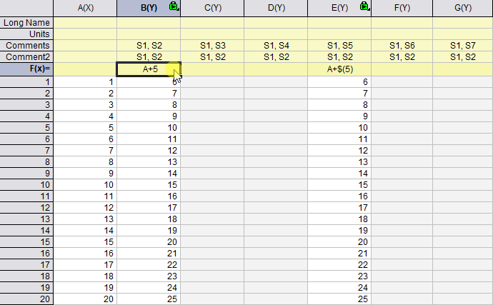
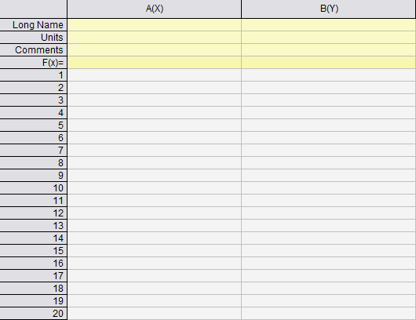
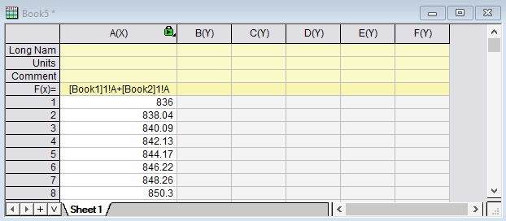
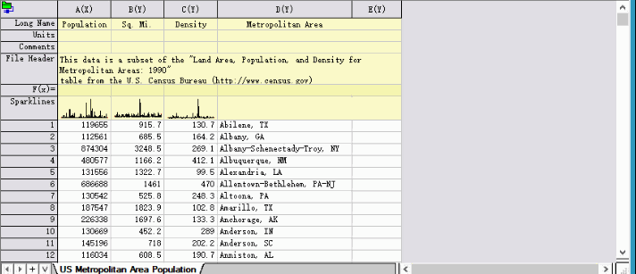

FAQ-1144 行または列にデータを自動入力するにはどうすればよいですか?
Autofill_Row_Column_Data
最終更新日：2025/10/27
Originには、列と行にデータを自動入力するいくつかの方法が用意されています。
セル式と列式を設定し、ドラッグすることで他のセルを埋めることができます。
 | ワークシートの数値ビューと数式ビューを切り替えるには、
- ワークシートレベルのミニツールバーの式を表示ボタン
 、または 、または
- メインメニューの編集: 編集モード(Ctrl + Alt + B)
|
セル式
Originは、セルのブロックを埋める斜めへのドラッグフィルをサポートしています。
- $表記を使用して、ドラッグフィル時の列または行を修正します。

- セルの右下隅をダブルクリックして、選択したセルの数式を列の最後まで自動入力します。

- ワークブックとシートの参照構文を使用して、セルの数式で他のワークブック/シートのデータを結合します。

- 列ラベルセルもオートフィルをサポートしています。増分せずにセルを埋めるには、 Ctrlキーを押しながらドラッグするか、ダブルクリックします。

- sum(A)[1]やA[1]のように、行参照を角括弧で囲んだcolumn[row]の構文を使用してオートフィル時に行参照を相対値に自動調整する場合、Ctrlキーを押しながらドラッグしてください。
列式
- 数式セル (F(x))の右下隅をダブルクリックすると、右側のすべてのセルが自動的に埋められます。増分せずにセルを埋めるには、 Ctrlキーを押しながらドラッグするか、ダブルクリックします。定数を修正するには、 $()表記を使用します。

- ワークブックおよびシート参照構文を使用して、他のワークブックまたはシートのデータを列式で結合します。
列式では、$(j)は現在の列の列番号です。

- 構文で列ショートネームを使用する場合は、Ctrlキーを押しながらドラッグすると、増分してオートフィルします。


フラッシュフィル
左側の列に明確なパターンがある場合、ターゲット列の最初のセルに予想される結果を入力します。Originはそのルールを推測し、適切な関数や数式をポップアッププレビューで提案し、残りのセルを次のいずれかで埋めることができます。
- 固定値 (Ctrl + Shift + E)：ソースデータが変更されても変わらない静的な値。
- 動的数式 (Ctrl + Shift + Enter): 参照元の列が変更されると、自動的に更新される数式。

キーワード:カテゴリ番号, カテゴリインデックス, カテゴリ値を表示